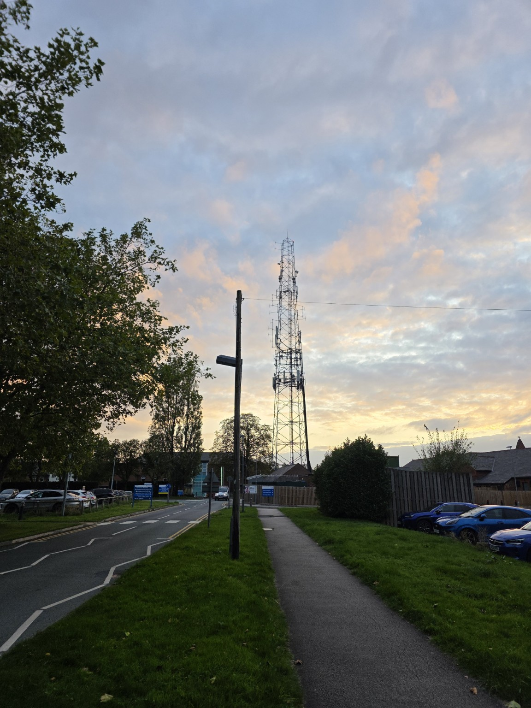
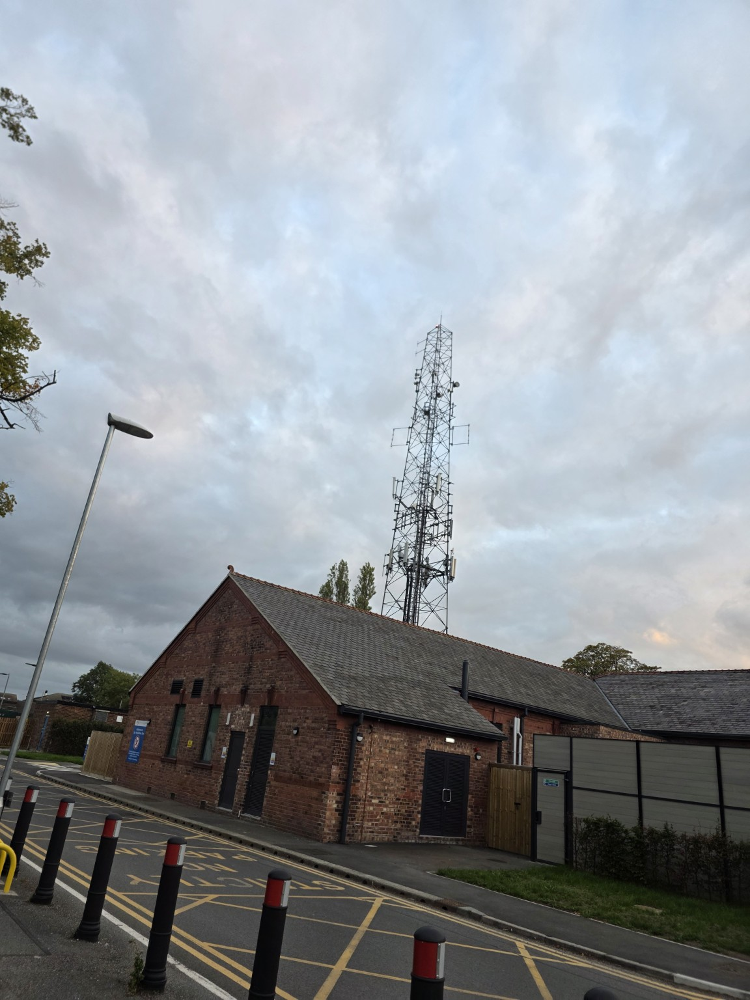

A NIGHT IN THE 1829 BUILDING
ESCAPE
FROM 1829.
The corridors remember.
Find a way out before they find you.
05WAYS OUT
03PURSUERS
01YOU
The corridors remember.
Find a way out before they find you.
W A S D Move
MOUSE Look · drag if cursor stays visible
SHIFT Sprint — makes noise
C / CTRL Crouch — quieter
F Toggle torch
TAB / M Floor map
E Hold at stairs, exits or wall art
ESC / P Pause
Sandra follows footsteps and investigates your last position.
Security patrols the wings and pursues on sight.
Deva asylum ghost senses you through walls. Aim your torch at it to slow it down.
Explore both floors using either staircase. Hold E to change floors or inspect supplied archival artwork; release E to return. Every NPC pauses while E is held. All five exits are downstairs. You have a five-second head start. The routes and characters are fictional; this is not a current evacuation plan.
Video reference supplied from the building archive. The footage opens in Google Photos in a new tab.
OPEN ARCHIVAL FOOTAGE ↗
